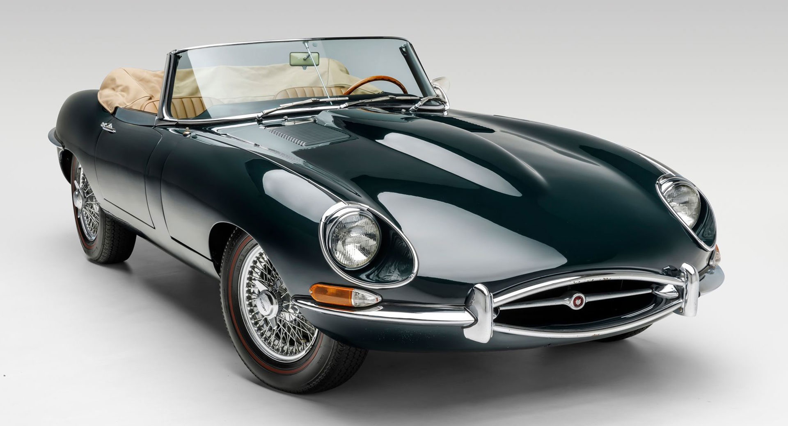
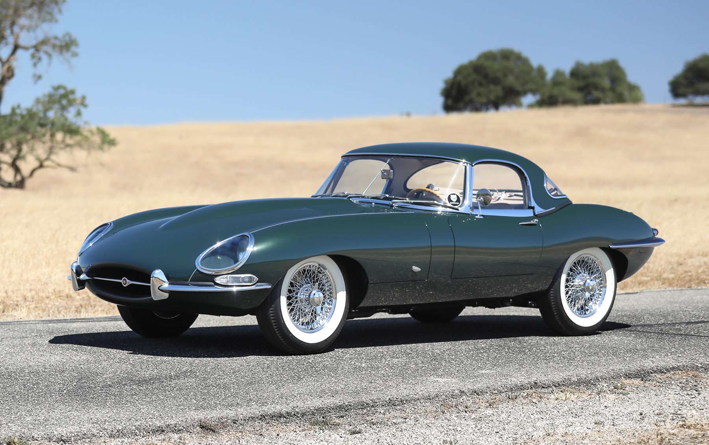

In the annals of automotive history, few cars have captured the imagination and admiration of enthusiasts quite like the Jaguar E-Type of the 1960s. Revered for its striking design, exhilarating performance, and innovative engineering, the E-Type stands as a timeless icon of British motoring excellence. Introduced in 1961 at the Geneva Motor Show, the E-Type made an immediate and profound impression with its long hood, curvaceous body lines, and sleek aerodynamic profile. Designed by Malcolm Sayer, a former aircraft engineer, the E-Type's styling was a masterpiece of form meeting function, effortlessly blending beauty with performance.
Beneath its elegant exterior, the E-Type boasted cutting-edge technology for its time. Equipped with independent rear suspension, disc brakes, and a monocoque construction, it offered handling and performance capabilities that set new benchmarks in the sports car segment. Powering the E-Type was Jaguar's legendary XK inline-six engine, available in various displacements and states of tune. Whether in coupe or convertible form, the E-Type delivered exhilarating performance, with acceleration and top speeds that rivalled its Italian and German contemporaries.
The E-Type's success on both road and track further solidified its legendary status. It garnered acclaim from enthusiasts and critics alike, with Enzo Ferrari famously calling it "the most beautiful car ever made." Throughout its production run, the E-Type underwent several updates and iterations, each building upon its reputation for style, performance, and luxury. Today, the Jaguar E-Type remains a coveted classic, sought after by collectors and enthusiasts worldwide. Its timeless design and unparalleled charisma continue to captivate new generations of car aficionados, ensuring its place as one of the most iconic and beloved sports cars of all time.